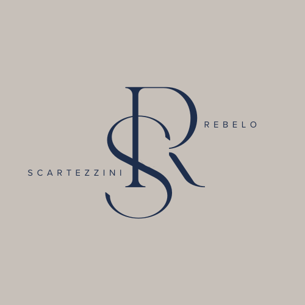
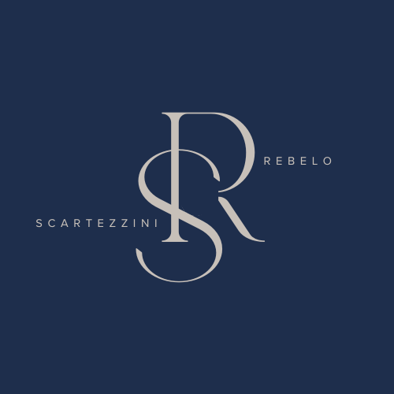

Cabeçalho e rodapé fixos em todas as lâminas — só o miolo muda. Formato 4:5.

01 / 05
03 / 05Deixar o inventário parado "pra resolver depois" — juros e multas não esperam.
Regra: monograma e contador sempre no mesmo lugar; os pontinhos de progresso marcam a lâmina atual; alterne fundo navy/vinho/cream entre lâminas para dar ritmo, mas mantenha o cabeçalho e rodapé idênticos.